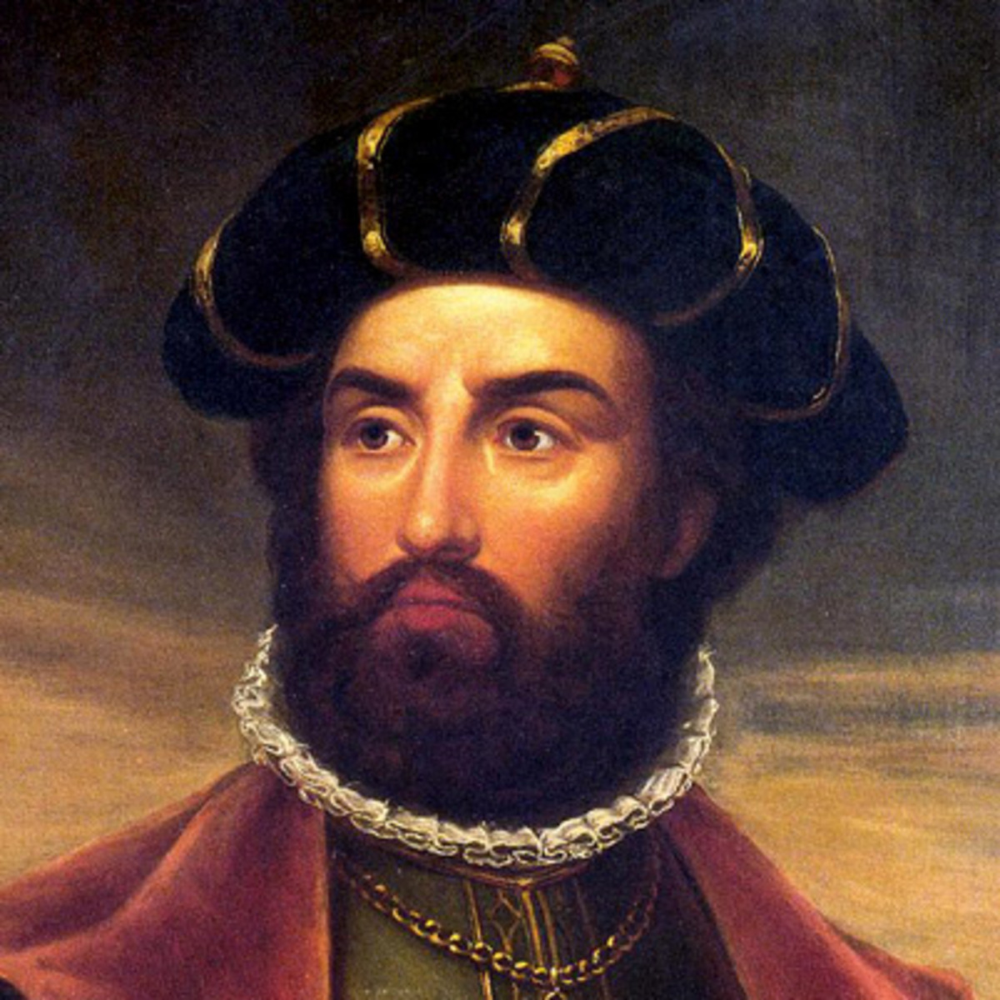

About me

Hello! I am Vasco De Gama son of Estêvão da Gama. I was born in 1460 and all my life I have wanted to sail the oceans. At age 20 I had already become the captain of a ship but I have always wanted to go further. Now I am looking for a crew to help me sail from Lisbon, Portugal to the southern tip of India. Prince Henry (Henry the Navigator) has already shown that the Atlantic ocean and the Indian ocean are not separate, now Manuel I of Portugal is sponsoring another voyage to prove that it is possible to sail around Africa. I hope you will be joining me!